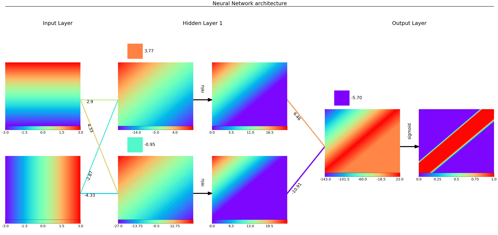
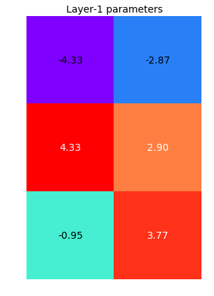

1. Introduction
Welcome back to the FCNN series!
In this new post, we are going to apply the same workflow used in the previous four posts (from this to that post) to visualise a 2D batch of inputs.
We have defined and used this workflow to visualize a single-sample case.
We refer to the single-sample case as 0D and to the batch case as 2D.
The batch contains the whole input space, which will be transformed throughout each neuron till the final output, i.e. the model prediction.
The main difference between the 0D and 2D cases regards the display of the neuron.
In the 0D case, each neuron is assigned with a single value, which is displayed as a circle filled with a colour related to the value itself.
In the 2D case, we need to plot the whole space, which requires a dedicated plt.axes() object from Matplotlib.
We train the neural network on some basic examples with Tensorflow.
The whole code to create a synthetic dataset and learn a neural network model with any of the four libraries mentioned above is wrapped into a Python class, trainFCNN(), and can be found in my Github repo.
We are going through the following steps:
- What do we want to achieve and how?
- Create a dataset, train the network and extract the final values of parameters and intermediate variables for a given set of inputs.
- Visualize two samples for a binary classification problem
- Describe the Python class,
visFCNN2D(), step-by-step. The source code can be found in my Github repo. - Play a bit with the class to visualize different neural network architectures for some funny toy cases.
Point 4 implies to create the dictionary fcnn containing what it is required to visualize the network, the initial settings, how to draw a neuron and a bias term, a line that represents a linear layer weight, how to define the colours of any object, how to draw the input layer, each hidden layer and the output layer.
2. What do we want to achieve and how?
We want to visualize what happens inside a neural network for a 2D batch containing the whole input space.
We are going to use the class that we have been working on throughout the last posts to train the network to specific tasks. We will then play with the trained network by feeding the meshgrid of the two inputs, $x_1$ and $x_2$, that range from -3 to 3, and inspecting how the neurons look like for a fixed configuration of parameters, i.e., the weights connecting the neurons (purple lines in the below scheme) and biases (yellow rectangles).
We simplify the nomenclature as follows: every variable (input, output, hidden variables) is modelled as a neuron and is represented with the plt.axes() object from the Matplotlib library.
In the below scheme, the input x is green, each output of the affine transformation z is cyan and the output a of the activation function (black rightward arrow) is blue.
The last activation output is the actual response of the network y.
We list here the description and the variable name used in the class code:
w_sz: the horizontal distance between the previous activation layer $a^{(kk-1)}$ and the next dense layer $z^{(kk)}$. It gives the horizontal length of the weights’ grid. For the first layer $a^{(0)} = x$.vm: vertical distance between two consecutive neurons (axes), no matter which layer.n_sz: axes size of a neuron.bias_size: side of the rectangle representing a bias term.a_sz: horizontal distance between the dense layer $z^{(kk)}$ and the activation layer $a^{(kk)}$ layer. It gives the horizontal length of the activation arrow.layerDist: horizontal distance between two consecutive activation layers, $a^{(kk-1)}$ and $a^{(kk)}$. It is the sum ofw_sz,a_szand doublen_sz.Nneuron_max: maximum number of neurons in a single layer. In the below scheme, it is equal to3, in the first hidden layer.bottomMargin: vertical offset between the lowest neuron of the current layerkkand the lowest neuron from the largest layer. It is required to make sure every neuron layer is vertically centred with fixed space between neurons throughout the whole network. In the below scheme, the first hidden layerH1comes with the largest number of neurons. The second hidden layerH2is offset bybottomMargin(yBHin the figure).Nlayers: number of layers, except for the input layer. In this case, two hidden and one output layers,3.
In the below chart, we give a visual description of the geometric parameters we need to define the network layout.

3. Training
The whole code to create a synthetic dataset and learn a neural network model with any of the four libraries mentioned above is wrapped into a Python class, trainFCNN(), and can be found in my Github repo.
First of all, we need to install this library with the pip command and to import the required package.
$ pip install numpy matplotlib tensorflow
import numpy as np
%matplotlib inline
import matplotlib.pyplot as plt
from matplotlib import cm
from matplotlib.colors import Normalize as mColNorm
import tensorflow as tf
from keras.utils import np_utils
In this section, we create the dataset for a binary classification problem, stripe.
We basically divided the domain into three areas by drawing two parallel lines.
Further details are given in this post.
tnn = trainFCNN(nb_pnt=2500, dataset='stripe')
tnn.plotPoints(idx=0)

We then use the Tensorflow library to train a fully connected neural network.
We define the network with the dims attribute.
Since we want two hidden layers, with 3 and 2 neurons each, we set dims=[3, 2].
Input and output dimensions are inferred from the dataset itself.
The training will be happening within the train method.
At the end of the training stage, we visualize the loss history to check whether it has reached convergence and the model outcome for the whole domain grid with plotModelEstimate.
tnn.train(lib='tf', dims=[3, 2], activation='relu', nb_epochs=250, lr=0.005)
The final model loss is 0.0024667626712471247
tnn.train(lib='tf', dims=[2], activation='relu', nb_epochs=250, lr=0.005)
The final model loss is 0.019849851727485657
plt.plot(tnn.lossHistory)
plt.title(tnn.mdlDescription());
tnn.plotModelEstimate(figsize=(16, 9))

So far, so good!
Now we need to extract the network parameters and the set of values of each variable.
Parameters and variables are stored in nn_prms and nn_vars2D, respectively.
We print out the dimension of each object.
It is a series of 2D weights and 1D biases.
The first weight matrix (2, 3) transforms the two inputs into three hidden variables in the first hidden layers.
That’s why a (3,) bias comes next.
The second transformation goes from 3 neurons to 2, while the last one from 2 to the sole output, 1.
{objNm: objVal.shape for objNm, objVal in zip(['W1', 'b1', 'W2', 'b2', 'W3', 'b3'], tnn.nn_prms)}
{'W1': (2, 2), 'b1': (2,), 'W2': (2, 1), 'b2': (1,)}
Since we have fed the whole input space as a flatten meshgrid of 101x101=10201 points, we have got 2D arrays for the variables with a fixed number of rows.
The second dimension stems from the layer dimensionality.
labels = ['X', 'z1', 'a1', 'z2', 'a2', 'z3', 'a3=Y']
{objNm: objVal.shape for objNm, objVal in zip(labels, [tnn.XXgrd]+tnn.nn_vars2D)}
{'X': (10201, 2),
'z1': (10201, 2),
'a1': (10201, 2),
'z2': (10201, 1),
'a2': (10201, 1)}
We define the structure fcnn2D, a Python dictionary, containing all the information required to visualize the network flow.
We treat the input as the output of a fictitious previous activation layer.
The set of activation layers, $a^{(kk)}$, is retrieved from tnn.nn_vars2D[1::2], while the set of dense layers, $z^{(kk)}$, come from tnn.nn_vars[::2].
In a similar fashion, we extract weights and biases from tnn.nn_prms.
The last two properties are the activation function used in any hidden layer and the function used in the output layer, which is related to the kind of problem to solve (regression, binary or multi-classification).
fcnn2D = {'activations': [tnn.XXgrd] + tnn.nn_vars2D[1::2], 'linNeurons':tnn.nn_vars2D[::2],
'weights': tnn.nn_prms[::2], 'biases': tnn.nn_prms[1::2],
'actFun': tnn.activation, 'lastActFun': tnn.lastActFun}
We also create the variable neurGrid, which contains the list of the meshgrid values of the two inputs, $x_1$ and $x_2$, required to display a contour plot of every neuron.
Each meshgrid is an 101x101=10201 array.
neurGrid = [tnn.Xgrd1, tnn.Xgrd2]
4. What does this visualization class look like?
4.1 Overall network
Let’s have a look at what we are going to build!
We create an instance of the class, vnn, and call the visualize method.
The two leftmost axes are the two inputs.
The bottom chart shows $x_1$ ranging from -3 to 3.
That’s why we have vertical iso-colour lines.
On the contrary, the top chart shows $x_2$ ranging from -3 to 3 with horizontal iso-colour lines.
We can immediately see how the first layer’s weight transformation rotates the input space by 45° to capture the direction of the two-class boundary lines.
Each chart comes with its own colorbar, since the output domain can change quite a lot from one neuron to another.
Since the activation function is the ReLu function, whatever is negative becomes 0, otherwise it does not change at all.
That’s why the two charts at the end of the first hidden layer show a large area of 0s, which is white and dark blue for a Blues and rainbow palette, respectively.
The output layer employs a sigmoid function to return the probability of the input to belonging to class 1 (blue).
Whenever the logit is quite negative, from red to green, the probability is basically 0.
Whenever the logit is quite positive, blue, the probability is basically 1.
The probability measures the model confidence of the input belonging to class 1 (internal stripe).
The model correctly assigns the stripe/outer regions to class 1 with probability equal to 1/0, respectively.
vnn = visFCNN2D(fcnn2D, neurGrid)
vnn.visualize(palette='Blues')
vnn.visualize(palette='rainbow')

4.2 Inspection of a single neuron and weights’ layer
In this section, we use the zoom method to inspect what is happening in a single neuron or a single layer of weights and biases.
The what attribute can assume any of the three values:
linNeurons: the output of a linear transformation,activations: the output of the activation function,parameters: a stack of weights and biases of a layer.
The level attribute defines which neuron or parameters’ layer to zoom.
For the linNeurons and activations cases, this attribute requires a list of two values, where the former specifies the layer position from the left and the latter the neuron index from the bottom.
In other words, level=[0, 1] selects the top neuron from the first hidden layer.
Please consider that the input layer is stacked as the first element of the activations layer.
The following chart shows a zoomed view of the second neuron $z$ (from bottom) from the first hidden layer (from left).
vnn.zoom(what='linNeurons', level=[0, 1], palette='rainbow')
The following chart shows a zoomed view of the first neuron $a$ from the third layer (from left), i.e. the output layer.
vnn.zoom(what='activations', level=[2, 0], palette='rainbow')

The following chart shows a zoomed view of the parameters from the first hidden layer.
It is the vertical stack of the 2x2 weight array and the 1x2 bias array.
vnn.zoom(what='parameters', level=[0], palette='rainbow')
